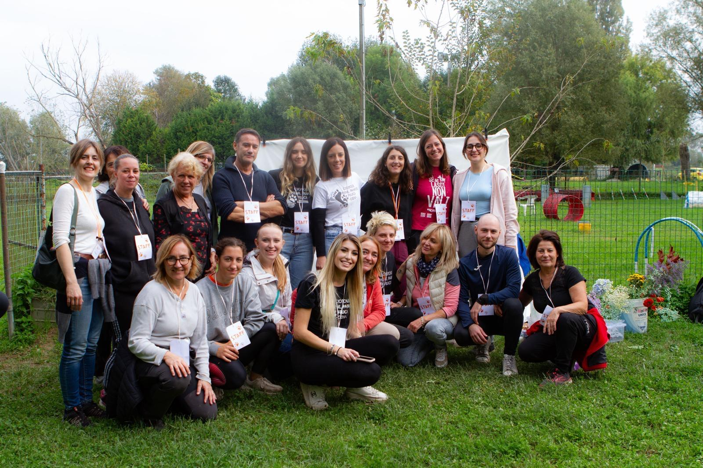

Tutti i cani vengono affidati chippati previo controllo preaffido e con profilassi veterinaria in regola.
Info: Alice | 349 1482136.
Siamo un gruppo di circa 40 volontari con una grande passione per gli animali, uniti dall’obiettivo di offrire una vita migliore a cani bisognosi. La nostra associazione, situata a Roncade, accudisce di circa 30 cani che arrivano da noi grazie alla staffetta solidale dai canili del sud. Ogni giorno, mattina e pomeriggio, ci dedichiamo con amore e impegno a tutte le necessità degli animali che accogliamo: somministriamo pasti e farmaci, facciamo passeggiate e giochi e ci occupiamo della loro igiene e pulizia. Lavoriamo instancabilmente per garantirgli una vita dignitosa e serena, nella speranza di trovargli una casa che lo ami per sempre. Siamo sempre alla ricerca di nuovi volontari che vogliano unirsi alla nostra missione, offrendo il loro tempo e il loro cuore per fare la differenza nella vita di questi meravigliosi amici a quattro zampe.
Musestre di Roncade - Treviso (TV) | Per indicazioni stradali clicca il link qui sotto
Visualizza su Google MapsSe ami gli animali e vuoi dare una mano concreta, unisciti a noi! Cerchiamo volontari per aiutarci nelle attività quotidiane e nella gestione dei nostri amici a quattro zampe.
Contattaci: Flisa | 347 4335790
Associazione Impronte di zampe nel cuore - IBAN: IT47D0306909606100000406723
Causale: DonazioneLista desideri Amazon: Link alla lista
Con l'adozione a distanza, puoi aiutare uno dei nostri cani a distanza, contribuendo al suo sostentamento e alle sue necessità quotidiane. Scegli un cane e sostienilo anche se non puoi adottarlo fisicamente.
Partecipa ai nostri eventi per supportare l'associazione e i nostri cani. Organizziamo regolarmente eventi di raccolta fondi, incontri di sensibilizzazione e altre attività. Resta aggiornato sui nostri eventi futuri!
Telefono: Alice | 349 1482136